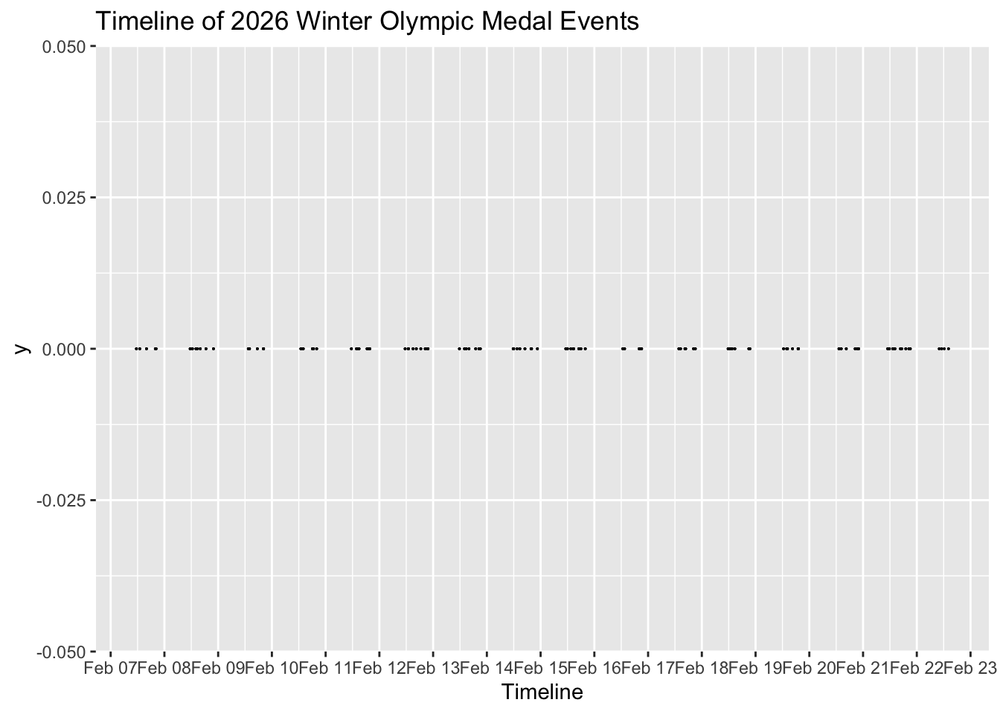
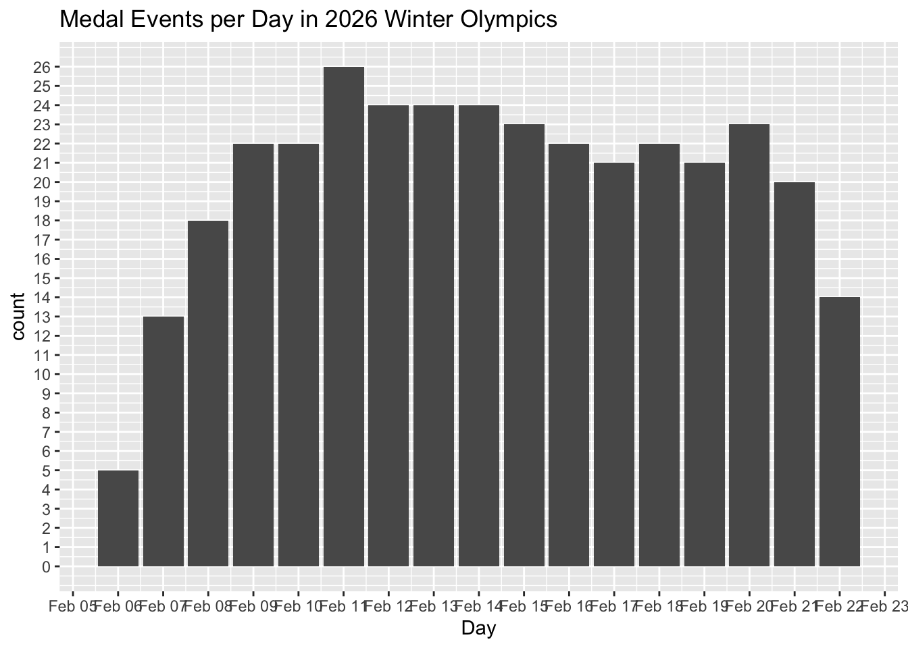

The projects should be numbered consecutively (i.e., in the order in which you began them), and should include for each project a description of the goal, the product (computer program, hand graph, computer graph, etc.), the data, and some interpretation. Reports must be reproducible and of high quality in terms of writing, grammar, presentation, etc.
library(tidyverse)## ── Attaching core tidyverse packages ──────────────────────── tidyverse 2.0.0 ──
## ✔ dplyr 1.1.4 ✔ readr 2.1.6
## ✔ forcats 1.0.1 ✔ stringr 1.6.0
## ✔ ggplot2 4.0.1 ✔ tibble 3.3.1
## ✔ lubridate 1.9.4 ✔ tidyr 1.3.2
## ✔ purrr 1.2.1
## ── Conflicts ────────────────────────────────────────── tidyverse_conflicts() ──
## ✖ dplyr::filter() masks stats::filter()
## ✖ dplyr::lag() masks stats::lag()
## ℹ Use the conflicted package (<http://conflicted.r-lib.org/>) to force all conflicts to become errorslibrary(tidytuesdayR)tt_datasets(2026)## Week Date Data
## 1 1 2026-01-06 Bring your own data from 2025!
## 2 2 2026-01-13 The Languages of Africa
## 3 3 2026-01-20 Astronomy Picture of the Day (APOD) Archive
## 4 4 2026-01-27 Brazilian Companies
## 5 5 2026-02-03 Edible Plants Database
## 6 6 2026-02-10 The 2026 Winter Olympics!
## 7 7 2026-02-17 Agricultural Production Statistics in New Zealand
## Source
## 1 <NA>
## 2 Languages of Africa
## 3 NASA API
## 4 Open data CNPJ - December 2025
## 5 Edible Plant Database
## 6 Milano-Cortina 2026 Winter Olympics Data
## 7 Figure.NZ
## Article
## 1 <NA>
## 2 Languages of Africa
## 3 Astronomy Picture of the Day
## 4 Wikipedia's List of largest Brazilian companies
## 5 GROW Observatory
## 6 Olympics Schedule and Results
## 7 Gap between people and sheep rapidly closingolymp_data <- tt_load("2026-02-10")## ---- Compiling #TidyTuesday Information for 2026-02-10 ----
## --- There is 1 file available ---
##
##
## ── Downloading files ───────────────────────────────────────────────────────────
##
## 1 of 1: "schedule.csv"class(olymp_data)## [1] "tt_data"df <- olymp_data$scheduleFor this data set I am going to visualize the spread of medal matches over the course of the Olympic schedule.
To do this I am first going to create a data frame and filter out all the non medal events.
olymp_medal_events <- df %>%
filter(is_medal_event == TRUE)glimpse(olymp_medal_events)## Rows: 344
## Columns: 21
## $ date <date> 2026-02-06, 2026-02-06, 2026-02-06, 2026-02-06, …
## $ discipline_code <chr> "ALP", "CCS", "SJP", "SBD", "SSK", "ALP", "ALP", …
## $ discipline_name <chr> "Alpine Skiing", "Cross-Country Skiing", "Ski Jum…
## $ event_code <chr> "ALPMDH----------------FNL-000100--", "CCSWSKIATH…
## $ event_description <chr> "Men's Downhill", "Women's 10km + 10km Skiathlon"…
## $ start_datetime_local <dttm> 2026-02-07 11:30:00, 2026-02-07 13:00:00, 2026-0…
## $ end_datetime_local <dttm> 2026-02-07 13:30:00, 2026-02-07 14:30:00, 2026-0…
## $ start_datetime_utc <dttm> 2026-02-07 10:30:00, 2026-02-07 12:00:00, 2026-0…
## $ end_datetime_utc <dttm> 2026-02-07 12:30:00, 2026-02-07 13:30:00, 2026-0…
## $ is_medal_event <lgl> TRUE, TRUE, TRUE, TRUE, TRUE, TRUE, TRUE, TRUE, T…
## $ is_training <lgl> FALSE, FALSE, FALSE, FALSE, FALSE, FALSE, FALSE, …
## $ venue_code <chr> "SSC", "TCC", "PSJ", "LSP", "MSS", "SSC", NA, "AB…
## $ venue_name <chr> "Stelvio Ski Centre", "Tesero Cross-Country Skiin…
## $ venue_slug <chr> "stelvio-ski-centre", "tesero-cross-country-skiin…
## $ location_name <chr> "Stelvio Ski Centre-ALP Course", "Tesero Cross-Co…
## $ location_code <chr> "SAL", "TCC", "PNH", "LBA", "MSS", "SAL", "CAL", …
## $ session_code <chr> "OALP01", "OCCS01", "OSJP01", "OSBD02", "OSSK01",…
## $ estimated_start <lgl> FALSE, FALSE, FALSE, FALSE, FALSE, FALSE, FALSE, …
## $ day_of_week <chr> "Friday", "Friday", "Friday", "Friday", "Friday",…
## $ start_time <time> 11:30:00, 13:00:00, 19:57:00, 20:17:00, 16:00:00…
## $ end_time <time> 13:30:00, 14:30:00, 20:35:00, 20:37:00, 17:21:00…Above I have filtered all the non medal events out of this set. It appears there are 344 medal events. This likely includes all medal races and in team events, a bronze medal match (hockey for example has a gold and silver event and a bronze event)
Next, I will plot all of the
ggplot(olymp_medal_events, aes(x= start_datetime_local, y=0)) +
geom_point(size=.01) +
labs(
title= "Timeline of 2026 Winter Olympic Medal Events",
x= "Timeline"
) +
scale_x_datetime(date_breaks = "1 day", date_labels = "%b %d")
Next, I will make a bar plot simply denoting the day, not the time to see day by day which day has the most amount of medal matches.
ggplot(olymp_medal_events, aes(x=date)) +
geom_bar() +
labs(
title="Medal Events per Day in 2026 Winter Olympics",
x= "Day"
) + scale_x_datetime(date_breaks = "1 day", date_labels = "%b %d") + scale_y_continuous(breaks = seq(0, max(table(olymp_medal_events$date)), by = 1))
count(olymp_medal_events)## # A tibble: 1 × 1
## n
## <int>
## 1 344Above, I have done two things. First, I have created a (small albeit) timeline of medal events given time and date along a singular plane. In addition, I’ve created a bar plot showing the specific amount of gold medal events per day.